GPT
78.2 heuristic indexWho leads the current frontier-family signal?
observedA dashboard-first, public-source view of frontier model signals, open/closed gaps, deployability economics and labor exposure. The interface puts the key comparisons up front, then keeps the full audit trail below.
Composite indexes are heuristic, direct model evidence is separated from family proxies, and forecast bands are scenario envelopes rather than calibrated confidence intervals.
This report is deliberately data-heavy. It uses the local rich frontier-model dataset plus the public Anthropic Economic Index release files for occupation exposure, task penetration, O*NET task text and BLS wage/employment companion fields. The goal is not to claim precision about the future; it is to make the assumptions inspectable enough that the forecast can be argued with.
One-screen entry points into the full analysis. Each card is backed by a generated CSV or figure, so the overview stays auditable.
Who leads the current frontier-family signal?
observedWhere is model-level evidence strongest?
direct_matchWho wins the 10-year frontier-quality stress test?
scenarioWho benefits if distribution, openness and cost matter more?
scenarioWhere is the open-vs-closed gap largest?
observedWhich directly matched model sits highest on price-performance?
direct_match| section | headline | metric | reading | artifact |
|---|---|---|---|---|
| Models | GPT | 78.2 heuristic index | 2 families stay in the top tier across sensitivity variants; read the rank as a weighted public-signal index, not a universal model score. | company_frontier_scores.csv |
| Evidence | GPT | 120 direct benchmark matches | Direct matches are the cleanest deployability evidence; family-only rows stay visible so the report does not borrow certainty from proxy data. | family_coverage_matrix.csv |
| Forecast | GPT | 58.7% simulation share | This is a sensitivity share from perturbed component weights, not a calibrated probability or prediction-market number. | company_next_frontier_probabilities.csv |
| Open Ecosystem | Qwen | 70.3% simulation share | The answer can differ from raw frontier-quality leadership because openness, cost and ecosystem pull are separate adoption axes. | company_next_frontier_probabilities.csv |
| Open vs Closed | text to image | 361.6 arena rating points | The report treats catch-up as category-specific. A single open-vs-closed headline hides large differences by task domain. | open_closed_gap_by_category.csv |
| Economics | OpenAI: GPT-4.1 Nano | 92.2 direct index | This view uses direct model-level benchmark evidence, avoiding the family-proxy shortcut used in the broader efficient-frontier screen. | direct_model_price_performance.csv |
| Labor | Data Entry Keyers | 60.2 disruption index | The score combines observed exposure, task structure and bottlenecks; it is pressure for redesign, not a claim that the occupation disappears. | job_exposure_scores.csv |
| Labor | Market Research Analysts and Marketing Specialists | 39.0 feasibility index | The replacement gate keeps physical, trust, regulatory and accountability bottlenecks in the calculation before labeling any role replaceable. | job_replacement_feasibility.csv |
| Workflows | finance analysis | 38.9 disruption index | Domain pressure translates occupation evidence into business language while preserving example occupations and human gates. | business_domain_ai_pressure.csv |
| Execution | GPT | 66 releases in 365 days | Cadence is a public execution signal and should be read beside quality, price and evidence depth rather than as a standalone rank. | release_cadence_by_family.csv |
| Coverage | 2026-05-15 | 1,327,480 source rows tracked | Freshness and missingness are surfaced before the report leans on rankings, which makes stale-source risk easier to spot. | source_coverage_diagnostics.csv |
| Uncertainty | 6 stable rank bands | 11 families stress-tested | Rank bands are sensitivity diagnostics rather than calibrated confidence intervals. | rank_stability_intervals.csv |
| Risk | 3 high-severity assumptions | Named failure modes | The skeptical layer is part of the product: it names how the analysis can break and points to mitigation artifacts. | claim_failure_modes.csv |
The report is organized around three questions:
Every chart should be read as an audit surface. If a conclusion depends on one metric, the report names that metric and shows the caveat near the visualization.
Evidence badges used throughout the HTML view: observed, direct_match, family_proxy, scenario, speculative. They are labels for evidence strength, not decoration.
The report now exposes source coverage before leaning on rankings. This section records row counts, captured dates, latest source dates and missingness across release dates, prices, benchmark values, context windows and organization/vendor fields.
| table | rows | latest_source_date | release_date_coverage | price_coverage | benchmark_value_coverage | organization_vendor_coverage |
|---|---|---|---|---|---|---|
| epoch_models_normalized | 3525 | 2026-04-24 | 0.9935 | 0 | 0 | 1 |
| github_ai_repositories | 1395 | 2026-05-15 | 1 | 0 | 0 | 0 |
| github_ai_repository_topics | 13746 | 0 | 0 | 0 | 0 | |
| github_model_mentions | 703 | 0 | 0 | 0 | 0 | |
| huggingface_model_files | 5256 | 0 | 0 | 0 | 0 | |
| huggingface_model_rollups | 2574 | 2026-05-15 | 1 | 0 | 0 | 1 |
| huggingface_model_tags | 36737 | 0 | 0 | 0 | 0 | |
| huggingface_models | 2574 | 2026-05-15 | 1 | 0 | 0 | 1 |
| livebench_judgments | 60372 | 0 | 0 | 1 | 0 | |
| lmarena_full | 862027 | 2026-05-14 | 1 | 0 | 1 | 0.9726 |
| openalex_ai_paper_authorships | 22643 | 0 | 0 | 0 | 0 | |
| openalex_ai_paper_concepts | 36079 | 0 | 0 | 1 | 0 |
Family coverage matrix:
| model_family | vendor | coverage_score | direct_benchmark_match_count | family_proxy_benchmark_count | source_gap_count |
|---|---|---|---|---|---|
| Claude | Anthropic | 100 | 48 | 30 | 0 |
| Gemini | 100 | 24 | 32 | 0 | |
| Phi | Microsoft | 100 | 6 | 8 | 0 |
| Grok | xAI | 100 | 3 | 24 | 0 |
| GPT | OpenAI | 99.5 | 120 | 61 | 0 |
| Mistral | Mistral | 99.33 | 56 | 23 | 0 |
| Qwen | Alibaba | 99.3 | 83 | 52 | 0 |
| DeepSeek | DeepSeek | 98.89 | 25 | 20 | 0 |
| Llama | Meta | 98.08 | 81 | 25 | 0 |
| Gemma | 96.3 | 15 | 14 | 0 | |
| Command | Command | 0 | 0 | 0 | 6 |
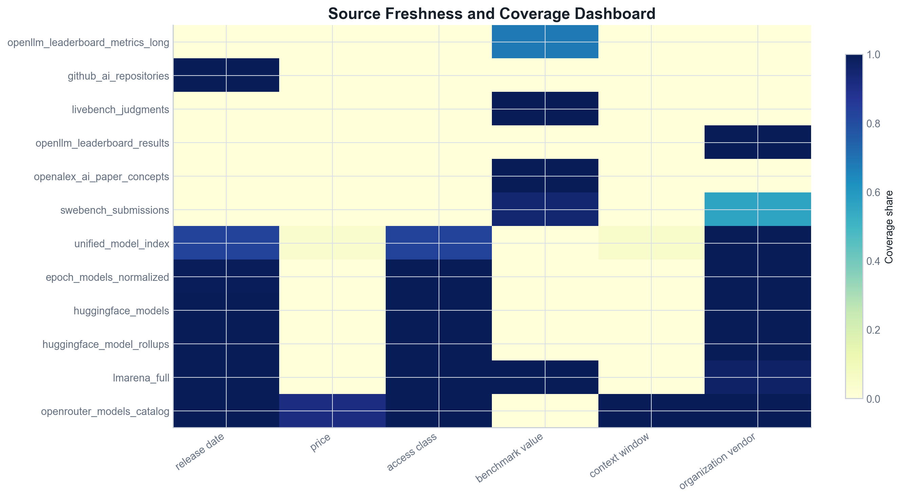
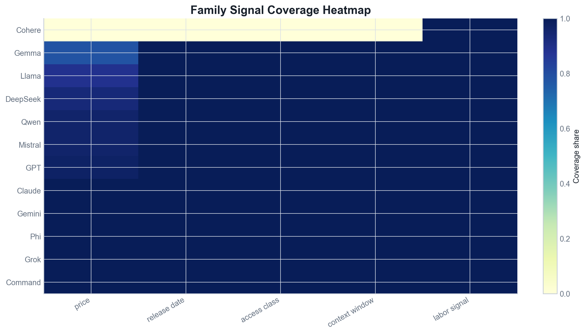
The index ranks model families and product lines, not legal companies. It blends benchmark performance, release velocity, API surface, price, research/ecosystem pull and openness. It is not a universal truth; sensitivity outputs show which rankings are weight-sensitive.
| rank | model_family | frontier_momentum_heuristic_index | sensitivity_label | performance_component | release_velocity_component | ecosystem_component | cost_efficiency_component | openness_component |
|---|---|---|---|---|---|---|---|---|
| 1 | GPT | 78.25 | stable_top_tier | 69.2487 | 100 | 87.1657 | 91.7046 | 41.4415 |
| 2 | Qwen | 78.05 | stable_top_tier | 74.6117 | 86.7888 | 80.9259 | 94.6247 | 97.9167 |
| 3 | Mistral | 54.97 | weight_sensitive | 45.7925 | 35.7759 | 70.6138 | 100 | 95.1064 |
| 4 | Claude | 54.1 | weight_sensitive | 69.9818 | 35.8405 | 57.7862 | 36.1209 | 55 |
| 5 | Llama | 53.67 | weight_sensitive | 36.747 | 2.8125 | 81.3439 | 100 | 91.607 |
| 5 | DeepSeek | 53.67 | weight_sensitive | 33.7632 | 32.9634 | 78.004 | 85.8923 | 92.2704 |
| 7 | Gemini | 51.13 | weight_sensitive | 64.5602 | 49.903 | 35.3614 | 80.9676 | 0 |
| 8 | Gemma | 45.14 | weight_sensitive | 38.4005 | 8.50216 | 65.6807 | 96.1247 | 91.9149 |
| 9 | Phi | 34.3 | weight_sensitive | 22.6984 | 0 | 48.871 | 91.7046 | 83.1769 |
| 10 | Grok | 28.4 | weight_sensitive | 37.5893 | 23.4806 | 27.389 | 0 | 1.84211 |
| 11 | Command | 2.93 | weight_sensitive | 0 | 0 | 0 | 0 | 36.6667 |
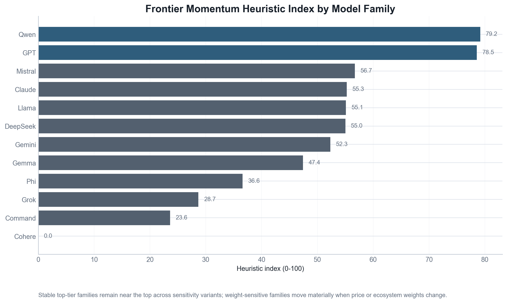
The headline rank is only the entry point. The stacked component chart below shows why a family ranks where it ranks. That matters because two families can have similar headline indexes for very different reasons: one may be performance-heavy, another may be ecosystem-heavy or cost-efficient.
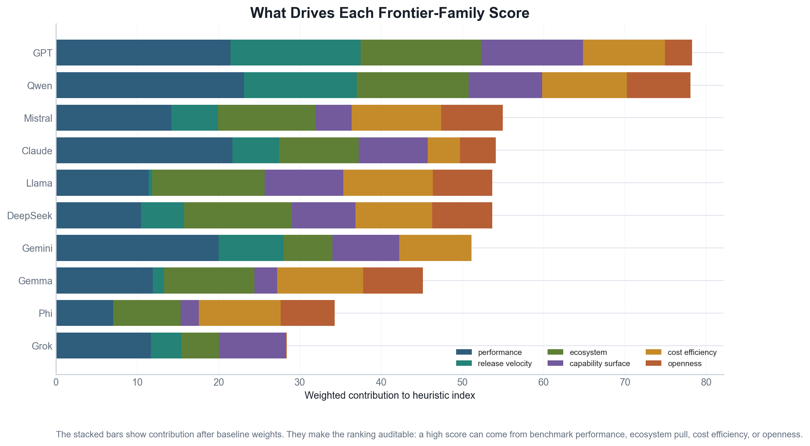
The evidence-depth scatter is the reviewer sanity check. A family with high score and high evidence count is more defensible than a family with a high score from sparse rows. Bubble size is tied to API catalog breadth, while color shows openness.
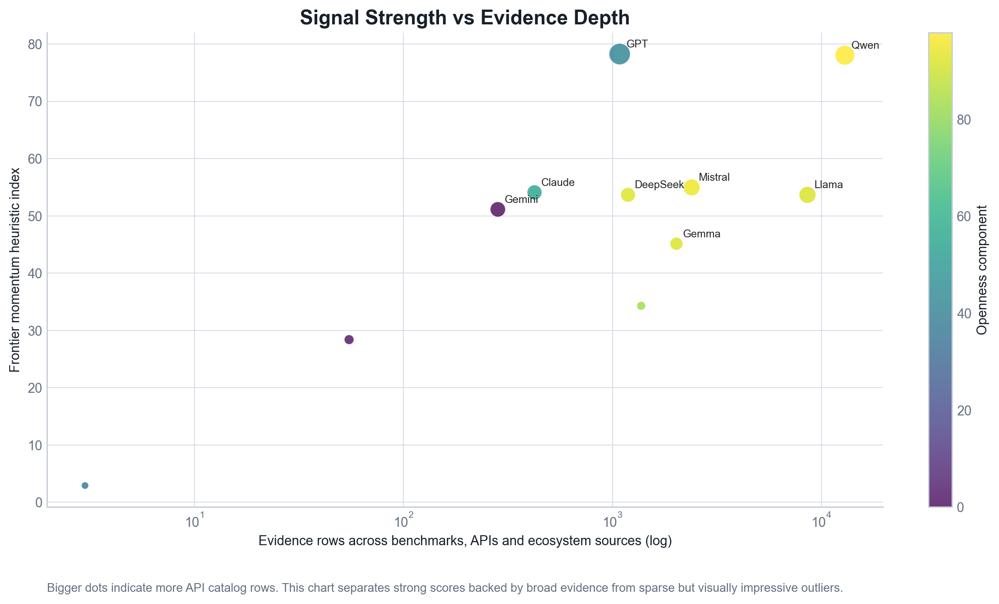
Reviewers often reason in terms of companies, but model families remain the cleaner technical unit. The vendor view is therefore a companion view: it blends the flagship family with the evidence-weighted portfolio mean and keeps the flagship family visible.
| rank | vendor | vendor_frontier_portfolio_score | flagship_family | family_count | portfolio_families | evidence_count |
|---|---|---|---|---|---|---|
| 1 | OpenAI | 78.25 | GPT | 1 | GPT | 1083 |
| 2 | Alibaba | 78.05 | Qwen | 1 | Qwen | 12932 |
| 3 | Mistral | 54.97 | Mistral | 1 | Mistral | 2394 |
| 4 | Anthropic | 54.1 | Claude | 1 | Claude | 424 |
| 5 | Meta | 53.68 | Llama | 1 | Llama | 8569 |
| 6 | DeepSeek | 53.67 | DeepSeek | 1 | DeepSeek | 1187 |
| 7 | 49.29 | Gemini | 2 | Gemini,Gemma | 2307 | |
| 8 | Microsoft | 34.3 | Phi | 1 | Phi | 1372 |
| 9 | xAI | 28.4 | Grok | 1 | Grok | 55 |
| 10 | Command | 2.93 | Command | 1 | Command | 3 |
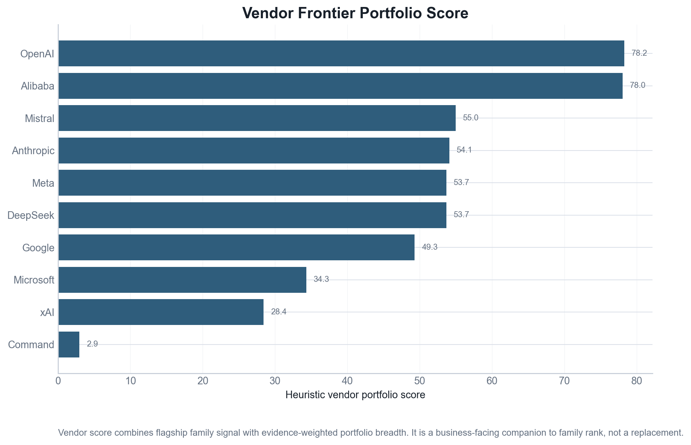
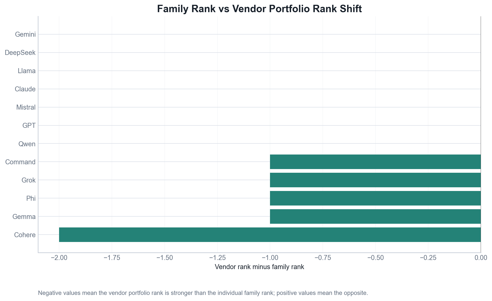
This table is not a prediction market. It is a Monte Carlo stress test over the scoring components: benchmark performance, release velocity, ecosystem pull, capability surface, cost and openness. simulation_win_share is the share of simulation draws won by each family, not a calibrated real-world probability. The corrected version separates frontier-quality leadership from open-ecosystem upside. The former asks who is most likely to make the raw best model; the latter asks who benefits if distribution and low cost matter more.
2-year simulated leaders:
| model_family | simulation_win_share | simulated_score_p10 | simulated_score_p90 |
|---|---|---|---|
| GPT | 77.6% | 73.85 | 81.7 |
| Qwen | 22.4% | 70.51 | 78.46 |
| Mistral | 0.0% | 39.88 | 47.95 |
| Claude | 0.0% | 52.49 | 60.46 |
| Llama | 0.0% | 34.77 | 43.94 |
| DeepSeek | 0.0% | 37.68 | 45.95 |
| Gemini | 0.0% | 50.46 | 58.3 |
| Gemma | 0.0% | 27.61 | 36.45 |
| Phi | 0.0% | 16.6 | 24.95 |
| Grok | 0.0% | 30.11 | 37.86 |
10-year simulated leaders, frontier-quality scenario:
| model_family | simulation_win_share | simulated_score_p10 | simulated_score_p90 |
|---|---|---|---|
| GPT | 58.7% | 70.99 | 82.47 |
| Qwen | 41.3% | 69.61 | 80.94 |
| Mistral | 0.0% | 42.01 | 54.09 |
| Claude | 0.0% | 49.91 | 61.47 |
| Llama | 0.0% | 40.05 | 52.69 |
| DeepSeek | 0.0% | 41.25 | 53.38 |
| Gemini | 0.0% | 45.51 | 56.99 |
| Gemma | 0.0% | 31.02 | 43.48 |
| Phi | 0.0% | 20.39 | 32.75 |
| Grok | 0.0% | 26.49 | 38.05 |
10-year simulated leaders, open-ecosystem-upside scenario:
| model_family | simulation_win_share | simulated_score_p10 | simulated_score_p90 |
|---|---|---|---|
| Qwen | 70.3% | 74.56 | 85.67 |
| GPT | 29.7% | 70.94 | 82.55 |
| Llama | 0.0% | 52.67 | 65.43 |
| Mistral | 0.0% | 53.47 | 65.76 |
| Claude | 0.0% | 48.26 | 59.65 |
| DeepSeek | 0.0% | 52.87 | 65.06 |
| Gemini | 0.0% | 40.13 | 52.39 |
| Gemma | 0.0% | 44.43 | 56.75 |
| Phi | 0.0% | 33.07 | 45.88 |
| Grok | 0.0% | 20.19 | 31.71 |
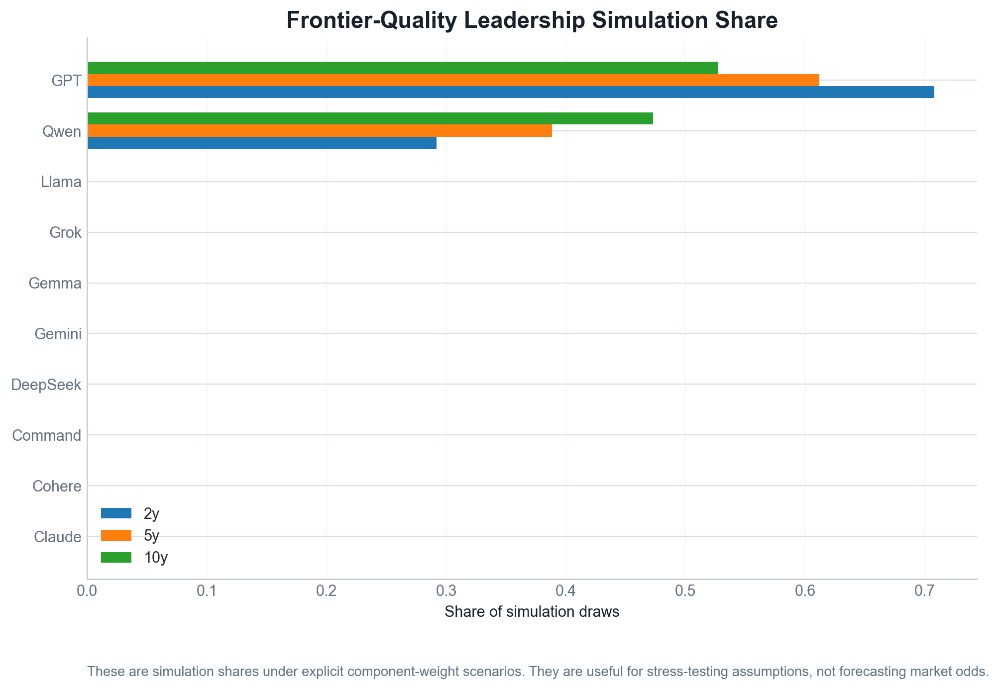
The scenario matrix compresses the same simulation into a reviewer-friendly view: each cell names the leading family under a scenario/horizon pair and reports its share of simulation draws. This makes it obvious when the answer changes because the question changed.
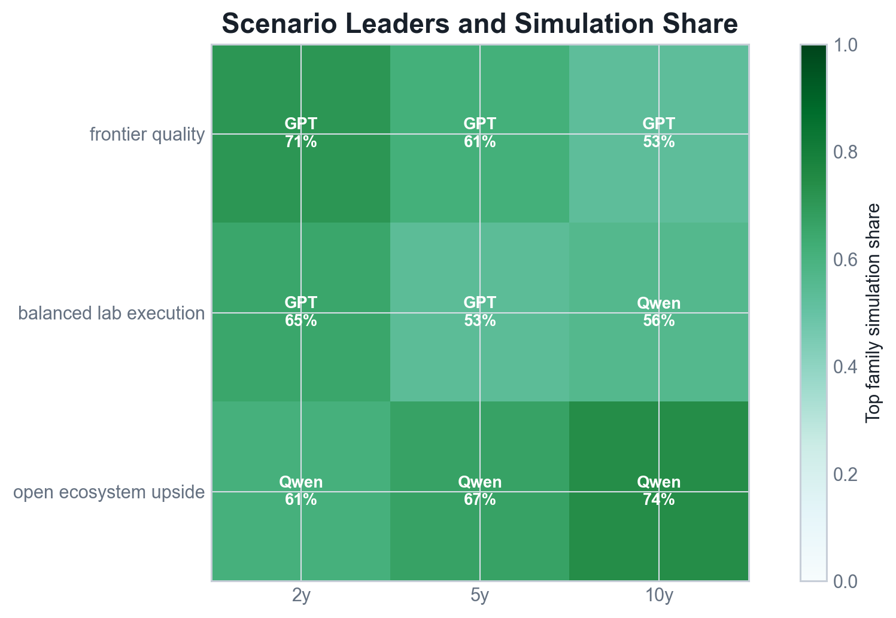
| category | closed_or_api | open_weight | open_closed_best_gap | open_closed_gap_pct_of_closed | comparison_note |
|---|---|---|---|---|---|
| text_to_image | 1574.24 | 1212.6857458083412 | 361.56 | 0.2297 | Comparable open-weight and closed/API rows observed in selected snapshot. |
| image_edit | 1513.01 | 1272.2820948867309 | 240.73 | 0.1591 | Comparable open-weight and closed/API rows observed in selected snapshot. |
| vision | 1451.69 | 1341.839120952578 | 109.85 | 0.0757 | Comparable open-weight and closed/API rows observed in selected snapshot. |
| webdev | 1586.93 | 1491.3053126020395 | 95.62 | 0.0603 | Comparable open-weight and closed/API rows observed in selected snapshot. |
| document | 1527.83 | 1433.687985154499 | 94.14 | 0.0616 | Comparable open-weight and closed/API rows observed in selected snapshot. |
| text | 1619.78 | 1549.227871094854 | 70.55 | 0.0436 | Comparable open-weight and closed/API rows observed in selected snapshot. |
| search | 1255.86 | n/a | n/a | 0 | No comparable open-weight or closed/API row in selected snapshot. |
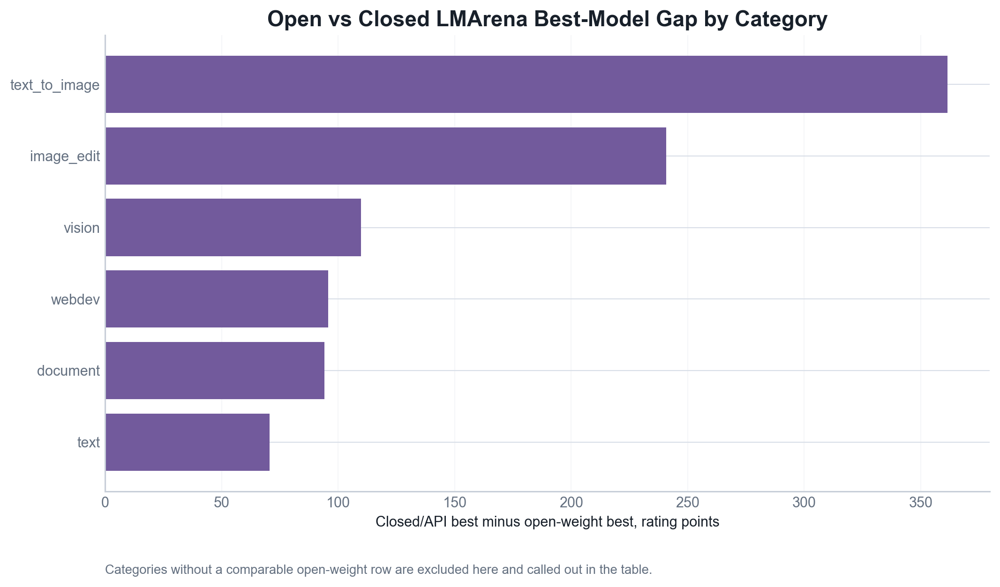
The gap chart shows differences, but differences alone can hide whether both sides are high-quality. The paired rating chart below shows the actual open and closed best observed ratings by category where both sides exist.
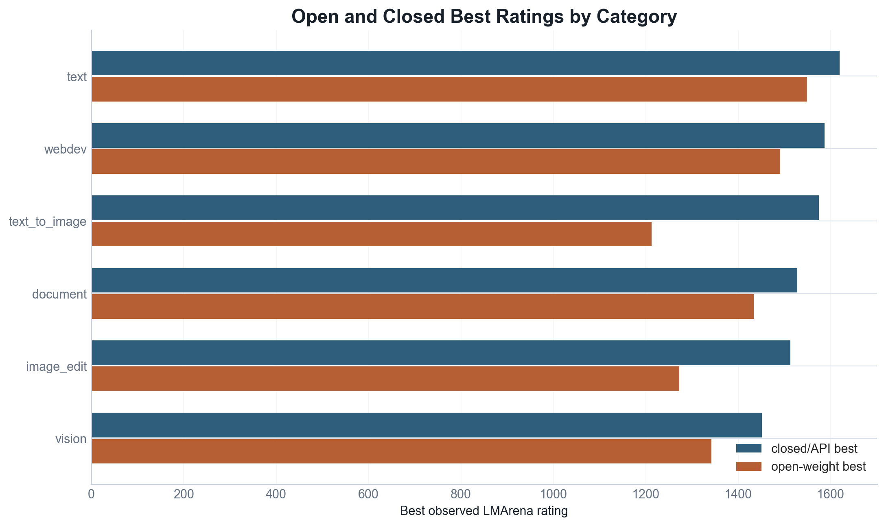
Raw best model and economically deployable model are not the same decision. This frontier is explicitly a family-level proxy: OpenRouter model prices are joined to the best observed LMArena rating for the model family, not to a direct benchmark for every listed model. It should be read as a deployability screen, not model-level proof.
| canonical_model | model_family | access_class | blended_price_usd_per_1m | family_best_lmarena | quality_proxy_level | price_performance_index |
|---|---|---|---|---|---|---|
| OpenAI: gpt-oss-20b | GPT | open_weight | 0.1015 | 1619.78 | family_level_proxy | 91.48 |
| inclusionAI: Ling-2.6-flash | Other | unknown | 0.023 | 1574.24 | family_level_proxy | 82.18 |
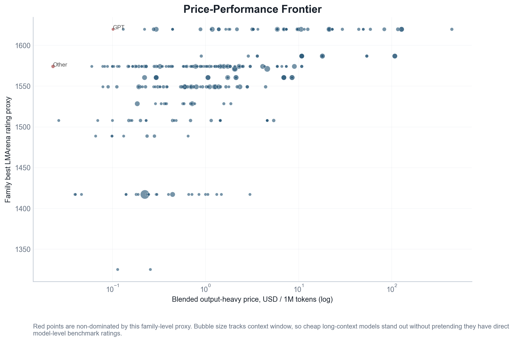
The context-price map keeps three product dimensions visible at once: context window, blended token price and family-level rating proxy. It prevents a common mistake in AI market analysis: treating cheap, long-context and high-quality as one metric.
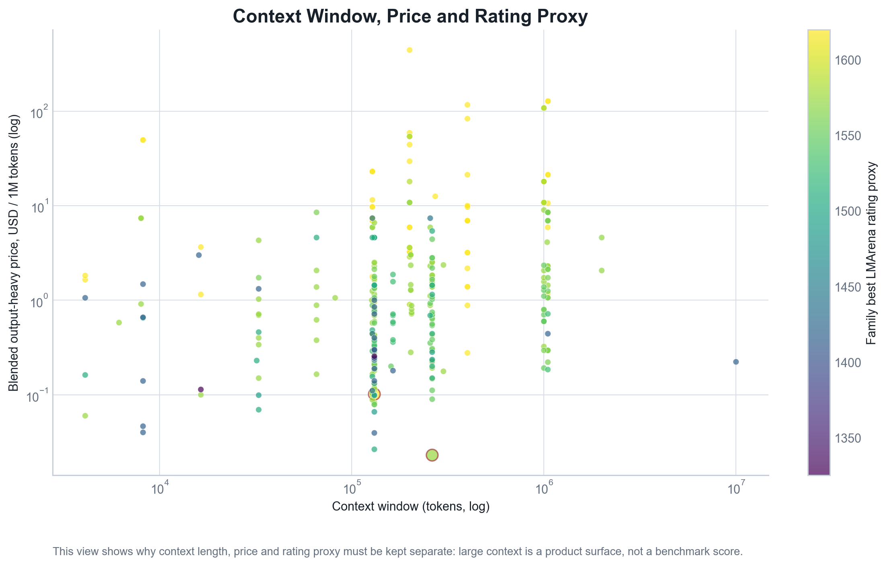
The audit table matches OpenRouter model IDs/names to LMArena, SWE-bench, LiveBench and Open LLM Leaderboard rows. Direct model matches are separated from family_only evidence so the deployability screen does not quietly inherit model-level certainty it does not have.
Match confidence audit:
| match_confidence | rows |
|---|---|
| family_only | 813 |
| normalized_exact | 504 |
| unmatched | 91 |
Direct evidence price-performance rows:
| canonical_model | model_family | blended_price_usd_per_1m | direct_evidence_sources | direct_lmarena_rating | direct_lmarena_match_confidence | direct_price_performance_index | quality_proxy_level |
|---|---|---|---|---|---|---|---|
| OpenAI: GPT-4.1 Nano | GPT | 0.295 | lmarena | 1560.56 | normalized_exact | 92.21 | direct_model_lmarena |
| OpenAI: GPT-4.1 Mini | GPT | 1.18 | lmarena | 1560.56 | normalized_exact | 91.18 | direct_model_lmarena |
| OpenAI: o3 Mini High | GPT | 3.245 | livebench,lmarena,swebench | 1590.01 | normalized_exact | 91.17 | direct_model_lmarena |
| OpenAI: o3 Mini | GPT | 3.245 | livebench,lmarena,swebench | 1590.01 | normalized_exact | 91.17 | direct_model_lmarena |
| OpenAI: o3 | GPT | 5.9 | livebench,lmarena,swebench | 1590.01 | normalized_exact | 90.21 | direct_model_lmarena |
| OpenAI: GPT-4.1 | GPT | 5.9 | lmarena | 1560.56 | normalized_exact | 88.9 | direct_model_lmarena |
| OpenAI: GPT-5.5 | GPT | 21.25 | lmarena | 1567.64 | normalized_exact | 87.52 | direct_model_lmarena |
| OpenAI: o3 Deep Research | GPT | 29.5 | livebench,lmarena,swebench | 1590.01 | normalized_exact | 87.28 | direct_model_lmarena |
| Google: Gemini 3 Flash Preview | Gemini | 2.125 | lmarena | 1535.16 | normalized_exact | 87.13 | direct_model_lmarena |
| OpenAI: GPT-5.4 Nano | GPT | 0.8825 | lmarena | 1538.27 | normalized_exact | 87.06 | direct_model_lmarena |
| Z.ai: GLM 5 | Other | 1.458 | lmarena | 1548.75 | normalized_exact | 86.86 | direct_model_lmarena |
| MoonshotAI: Kimi K2.6 | Other | 2.524 | lmarena | 1545.48 | normalized_exact | 86.12 | direct_model_lmarena |
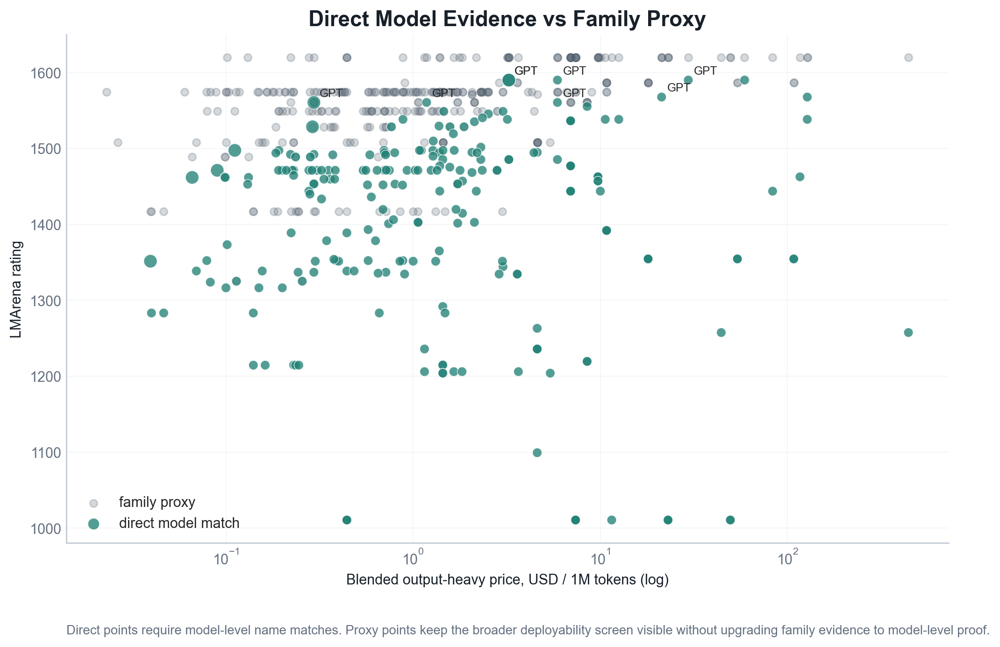
The labor table joins Anthropic observed occupation exposure to wage/job companion data, task-level penetration, automation/augmentation mode shares, and keyword-derived task bottlenecks from O*NET text. The output is an occupation-level pressure index, not a prediction that a whole occupation vanishes.
| title | near_term_disruption_index | substitution_pressure_index | augmentation_index | full_job_automation_feasibility_index | dominant_outcome | risk_label |
|---|---|---|---|---|---|---|
| Data Entry Keyers | 60.16 | 68.88 | 51.54 | 37.72 | replacement_candidate | very_high |
| Market Research Analysts and Marketing Specialists | 59.55 | 56.36 | 67.43 | 38.97 | replacement_candidate | high |
| Medical Transcriptionists | 58.94 | 60.44 | 60.15 | 28.27 | mixed_redesign | high |
| Technical Writers | 58.6 | 55.78 | 59.26 | 36.26 | replacement_candidate | high |
| Sales Representatives, Wholesale and Manufacturing, Except Technical and Scientific Products | 54.97 | 55.94 | 56.77 | 34.77 | mixed_redesign | high |
| Financial and Investment Analysts | 53.75 | 40.35 | 66.37 | 27.24 | augmentation_first | high |
| Statistical Assistants | 53.55 | 47.71 | 59.62 | 31.6 | augmentation_first | high |
| Human Resources Assistants, Except Payroll and Timekeeping | 51.76 | 50.06 | 52.03 | 30.44 | mixed_redesign | high |
| Mathematical Science Teachers, Postsecondary | 50.86 | 43.32 | 53.09 | 26.39 | augmentation_first | high |
| Social Science Research Assistants | 50.61 | 44.68 | 55.18 | 27.3 | augmentation_first | high |
| Engineering Teachers, Postsecondary | 50.23 | 40.29 | 50.32 | 24.37 | augmentation_first | high |
| Receptionists and Information Clerks | 49.89 | 53.46 | 49.79 | 30.45 | mixed_redesign | high |
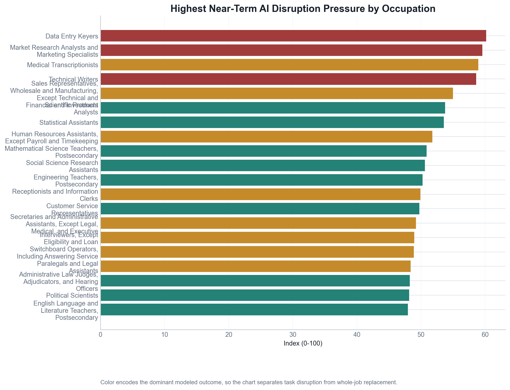
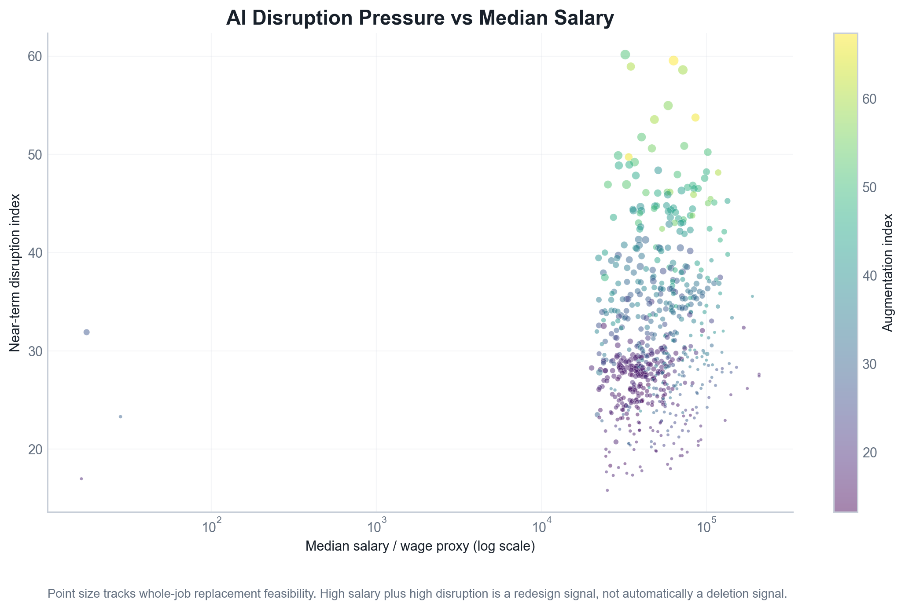
The replacement feasibility index gates substitution pressure through physical, trust, regulatory and task-coverage bottlenecks. This is the section that answers the "will AI take all jobs" question more honestly: many occupations are touched; fewer are clean full-job replacement candidates.
| title | job_family | full_job_automation_feasibility_index | substitution_pressure_index | human_bottleneck_index | dominant_outcome |
|---|---|---|---|---|---|
| Market Research Analysts and Marketing Specialists | Business and Financial Operations | 38.97 | 56.36 | 0 | replacement_candidate |
| Data Entry Keyers | Office and Administrative Support | 37.72 | 68.88 | 0 | replacement_candidate |
| Technical Writers | Arts, Design, Entertainment, Sports, and Media | 36.26 | 55.78 | 0 | replacement_candidate |
| Sales Representatives, Wholesale and Manufacturing, Except Technical and Scientific Products | Sales and Related | 34.77 | 55.94 | 2.4 | mixed_redesign |
| Office Clerks, General | Office and Administrative Support | 32.08 | 51.56 | 1.22 | mixed_redesign |
| Statistical Assistants | Office and Administrative Support | 31.6 | 47.71 | 0.78 | augmentation_first |
| Receptionists and Information Clerks | Office and Administrative Support | 30.45 | 53.46 | 1.26 | mixed_redesign |
| Human Resources Assistants, Except Payroll and Timekeeping | Office and Administrative Support | 30.44 | 50.06 | 0 | mixed_redesign |
| Secretaries and Administrative Assistants, Except Legal, Medical, and Executive | Office and Administrative Support | 30.34 | 52.33 | 1.95 | mixed_redesign |
| Medical Transcriptionists | Healthcare Support | 28.27 | 60.44 | 9.95 | mixed_redesign |
| Switchboard Operators, Including Answering Service | Office and Administrative Support | 27.58 | 49.12 | 0.68 | mixed_redesign |
| Social Science Research Assistants | Life, Physical, and Social Science | 27.3 | 44.68 | 0.68 | augmentation_first |
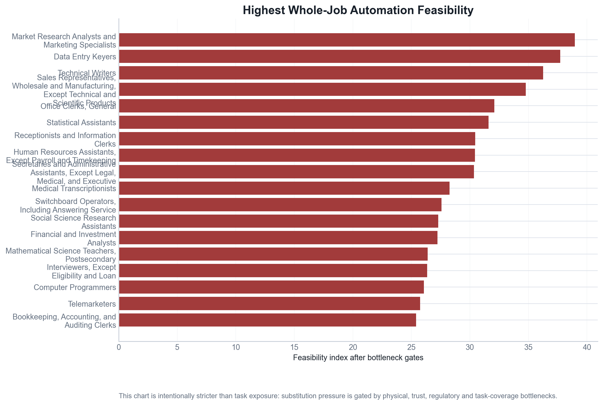
| labor_cluster_id | cluster_label | occupation_count | full_job_automation_feasibility_index | augmentation_index | human_bottleneck_index | example_occupations |
|---|---|---|---|---|---|---|
| 2 | replacement-prone clerical/transaction work | 98 | 20.7162 | 46.4024 | 1.55796 | Data Entry Keyers; Market Research Analysts and Marketing Specialists; Medical Transcriptionists; Technical Writers; Sales Representatives, Wholesale and Manufacturing, Except Technical and Scientific Products |
| 0 | mixed redesign work | 138 | 14.3645 | 32.4154 | 2.20072 | Dispatchers, Except Police, Fire, and Ambulance; Counter and Rental Clerks; Tax Preparers; Nursing Instructors and Teachers, Postsecondary; Procurement Clerks |
| 4 | augmentation-heavy expert work | 27 | 10.737 | 32.2737 | 1.55037 | Desktop Publishers; Special Effects Artists and Animators; Photographic Process Workers and Processing Machine Operators; Graphic Designers; Art Directors |
| 6 | mixed redesign work | 215 | 9.09526 | 19.2143 | 1.94414 | Multiple Machine Tool Setters, Operators, and Tenders, Metal and Plastic; Transportation Security Screeners; Ophthalmic Laboratory Technicians; Molders, Shapers, and Casters, Except Metal and Plastic; Ushers, Lobby Attendants, and Ticket Takers |
| 5 | mixed redesign work | 103 | 7.69932 | 19.8668 | 7.65272 | Insurance Appraisers, Auto Damage; Computer, Automated Teller, and Office Machine Repairers; Rail Yard Engineers, Dinkey Operators, and Hostlers; Amusement and Recreation Attendants; Bus and Truck Mechanics and Diesel Engine Specialists |
| 3 | augmentation-heavy expert work | 124 | 4.73355 | 29.6729 | 2.4329 | Lawyers; Atmospheric and Space Scientists; Chief Executives; Construction and Building Inspectors; Geoscientists, Except Hydrologists and Geographers |
| 1 | augmentation-heavy expert work | 51 | 3.61902 | 26.5986 | 9.81039 | Nurse Practitioners; Nurse Midwives; Genetic Counselors; Nurse Anesthetists; Pharmacists |
Labor-weighted dominant outcome summary:
| group | occupation_count | labor_weight_sum | weighted_disruption_index | weighted_replacement_feasibility | weighted_augmentation_index |
|---|---|---|---|---|---|
| replacement_candidate | 3 | 796776 | 59.76 | 38.16 | 59.36 |
| mixed_redesign | 364 | 6.74605e+07 | 32.91 | 14.31 | 25.51 |
| augmentation_first | 389 | 7.54147e+07 | 31.08 | 8.58 | 33.5 |
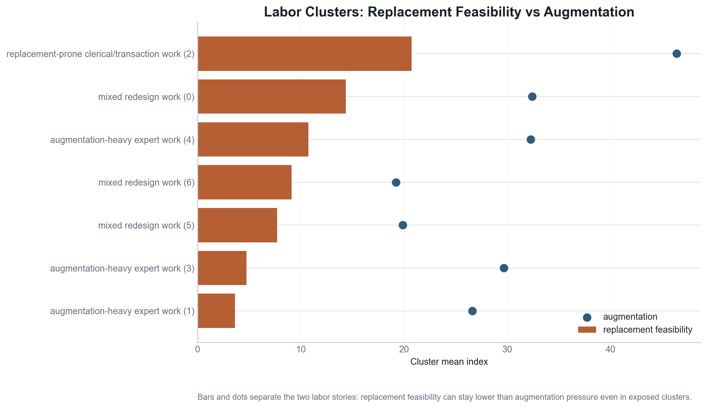
The labor-weighted outcome mix below is the report's guardrail against overclaiming. It weights modeled outcomes by the best available public labor proxy so a handful of highly automatable occupations do not dominate the narrative.
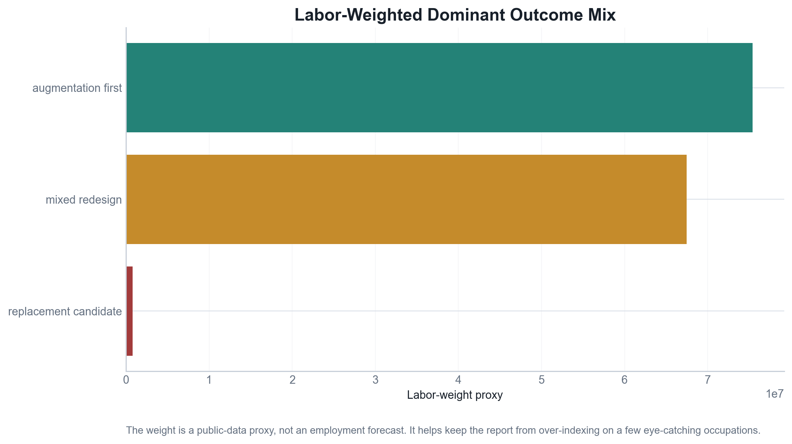
The domain layer translates occupation-level pressure into business language. It does not replace occupation evidence; each domain keeps example occupations and explicit human gates so a portfolio reviewer can see where the abstraction could fail.
| business_domain | pressure_label | disruption_index | augmentation_index | replacement_feasibility_index | human_bottleneck_index | example_occupations |
|---|---|---|---|---|---|---|
| finance_analysis | moderate | 38.91 | 39.74 | 15.46 | 1.58 | Market Research Analysts and Marketing Specialists; Financial and Investment Analysts; Accountants and Auditors; Loan Officers |
| marketing_content | moderate | 34.82 | 33.3 | 12.93 | 1.27 | Technical Writers; Public Relations Specialists; Real Estate Brokers; Real Estate Sales Agents |
| software_engineering | moderate | 33.81 | 32.14 | 12.44 | 3.93 | Social Science Research Assistants; Secretaries and Administrative Assistants, Except Legal, Medical, and Executive; Interviewers, Except Eligibility and Loan; Office Clerks, General |
| customer_support | moderate | 32.76 | 29.95 | 12.79 | 2.79 | Sales Representatives, Wholesale and Manufacturing, Except Technical and Scientific Products; Receptionists and Information Clerks; Customer Service Representatives; Switchboard Operators, Including Answering Service |
| legal_compliance | moderate | 31.26 | 28.01 | 9.55 | 3.1 | Paralegals and Legal Assistants; Administrative Law Judges, Adjudicators, and Hearing Officers; Judges, Magistrate Judges, and Magistrates; Property, Real Estate, and Community Association Managers |
| operations_back_office | moderate | 30.2 | 24.04 | 11.11 | 3.28 | Data Entry Keyers; Statistical Assistants; Human Resources Assistants, Except Payroll and Timekeeping; Political Scientists |
| education | moderate | 28.91 | 23.28 | 8.97 | 3.74 | Mathematical Science Teachers, Postsecondary; Engineering Teachers, Postsecondary; English Language and Literature Teachers, Postsecondary; Health Specialties Teachers, Postsecondary |
| healthcare_administration | moderate | 27.73 | 28.43 | 4.35 | 7.52 | Medical Transcriptionists; Nurse Practitioners; Medical Records Specialists; Magnetic Resonance Imaging Technologists |
Workflow examples:
| business_domain | workflow_example | likely_ai_role | human_gate |
|---|---|---|---|
| software_engineering | Issue triage, code review, test generation and migration planning | draft patches and review checklists | senior engineer approval and production ownership |
| customer_support | Ticket summarization, answer drafting and escalation routing | suggest responses and detect repeated issues | human review for refunds, safety and account actions |
| legal_compliance | Contract review, policy comparison and evidence packet preparation | extract clauses and compare requirements | licensed professional signoff |
| marketing_content | Campaign briefs, SEO drafts, localization and asset variants | generate drafts and performance hypotheses | brand, legal and factual review |
| finance_analysis | Variance explanations, spreadsheet checks and memo drafting | surface anomalies and draft analysis | accountability for assumptions and controls |
| healthcare_administration | Claims coding, prior authorization packets and patient-message drafts | prepare structured documentation | clinical and compliance review |
| education | Lesson planning, tutoring support and feedback drafting | adapt materials and summarize progress | teacher judgment and student relationship |
| operations_back_office | Data entry cleanup, scheduling, reconciliation and process documentation | automate routine transformations | exception handling and vendor/customer accountability |
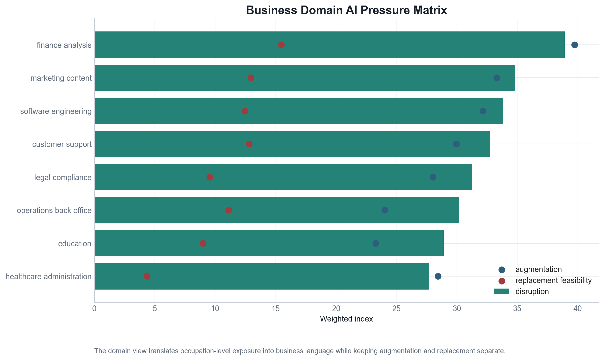
Base scenario subset:
| target_year | metric | value | unit | method |
|---|---|---|---|---|
| 2028 | frontier_context_window_multiplier | 6.23 | x current API catalog trend | capped scenario from OpenRouter upper-tail slope; raw=6.23x capped=False |
| 2028 | frontier_output_price_factor | 1 | fraction of current low-price frontier API output cost | OpenRouter lower-quintile output price slope; observed=0.036, scenario_assumed=0.000 |
| 2028 | open_weight_lmarena_gap_remaining | 53.6 | arena rating points | current open vs closed LMArena gap with scenario-specific closure speed |
| 2028 | share_of_us_occupation_tasks_materially_touched | 0.104 | share of task-weighted occupation activity | Anthropic observed exposure plus O*NET task bottleneck pressure, scaled by horizon |
| 2031 | frontier_context_window_multiplier | 64 | x current API catalog trend | capped scenario from OpenRouter upper-tail slope; raw=96.70x capped=True |
| 2031 | frontier_output_price_factor | 1 | fraction of current low-price frontier API output cost | OpenRouter lower-quintile output price slope; observed=0.036, scenario_assumed=0.000 |
| 2031 | open_weight_lmarena_gap_remaining | 28.2 | arena rating points | current open vs closed LMArena gap with scenario-specific closure speed |
| 2031 | share_of_us_occupation_tasks_materially_touched | 0.183 | share of task-weighted occupation activity | Anthropic observed exposure plus O*NET task bottleneck pressure, scaled by horizon |
| 2036 | frontier_context_window_multiplier | 64 | x current API catalog trend | capped scenario from OpenRouter upper-tail slope; raw=9351.33x capped=True |
| 2036 | frontier_output_price_factor | 1 | fraction of current low-price frontier API output cost | OpenRouter lower-quintile output price slope; observed=0.036, scenario_assumed=0.000 |
| 2036 | open_weight_lmarena_gap_remaining | 5.6 | arena rating points | current open vs closed LMArena gap with scenario-specific closure speed |
| 2036 | share_of_us_occupation_tasks_materially_touched | 0.281 | share of task-weighted occupation activity | Anthropic observed exposure plus O*NET task bottleneck pressure, scaled by horizon |
The dashboard puts four scenario families on one page: context scale, output price, open-weight benchmark gap and task-share contact. The useful reading is not the exact number in 2036; it is which assumptions move together and which do not.
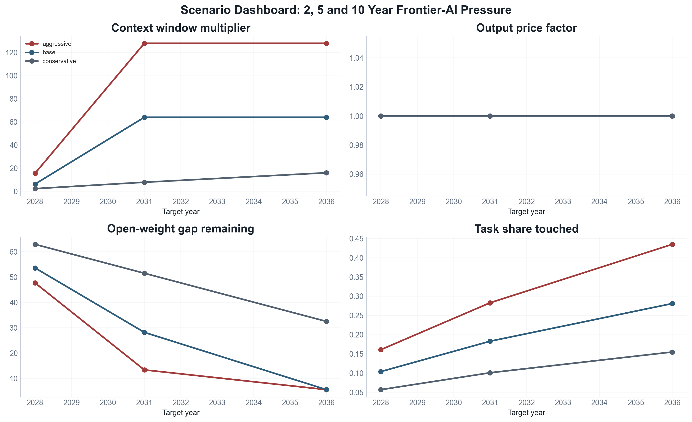
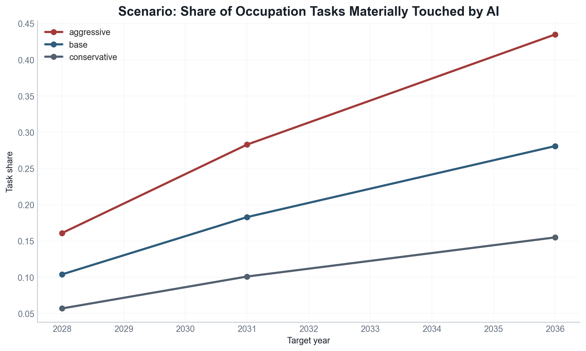
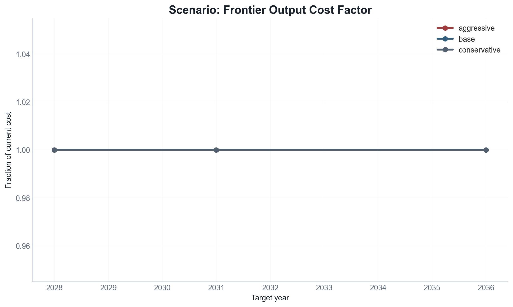
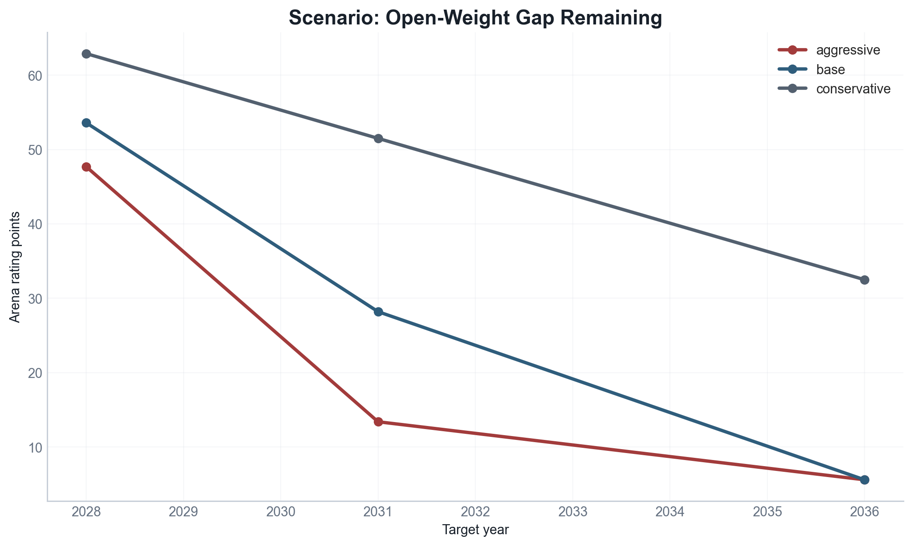
The uncertainty view stress-tests component weights and evidence depth. These intervals are not calibrated confidence intervals; they are a visibility layer for how much the rank can move when public-source signals are perturbed.
| model_family | current_rank | score_p10 | score_p50 | score_p90 | best_rank | median_rank | worst_rank | rank_stability_label |
|---|---|---|---|---|---|---|---|---|
| GPT | 1 | 75.48 | 78.06 | 80.49 | 1 | 1 | 2 | stable |
| Qwen | 2 | 76 | 77.91 | 80.07 | 1 | 2 | 2 | stable |
| Claude | 4 | 51.41 | 54.14 | 57.21 | 3 | 4 | 8 | moderate |
| Mistral | 3 | 51.32 | 54.78 | 57.86 | 3 | 4 | 7 | moderate |
| Llama | 5 | 49.6 | 53.47 | 57.43 | 3 | 5 | 7 | moderate |
| DeepSeek | 5 | 50.01 | 53.62 | 56.72 | 3 | 5 | 7 | moderate |
| Gemini | 7 | 48.04 | 51.5 | 54.85 | 3 | 7 | 8 | moderate |
| Gemma | 8 | 41.39 | 44.84 | 48.84 | 6 | 8 | 9 | stable |
| Phi | 9 | 30.7 | 34.36 | 38 | 9 | 9 | 10 | stable |
| Grok | 10 | 24.58 | 28.99 | 32.82 | 8 | 10 | 11 | stable |
| Command | 11 | 4.23 | 10.3 | 19.05 | 10 | 11 | 11 | stable |
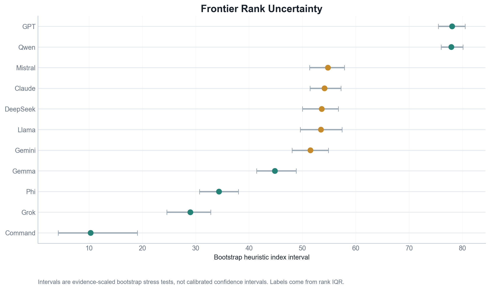
The forecast band chart is a scenario envelope across conservative, base and aggressive cases. It should not be read as a statistical confidence band.
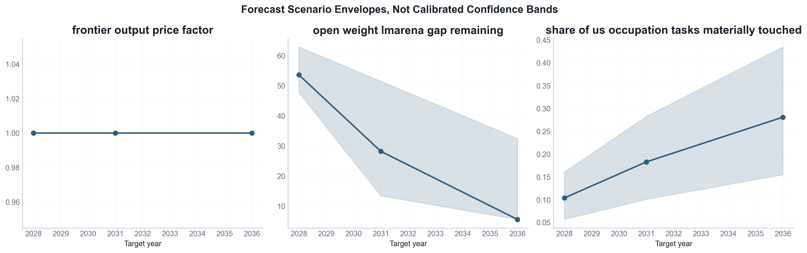
Release cadence separates visible public execution speed from benchmark quality. The cadence tables combine OpenRouter API catalog entries and Epoch metadata, deduplicated by family, vendor, product line and date.
Family cadence:
| model_family | vendor | total_releases | recent_releases_365d | median_days_between_releases | days_since_latest_release | cadence_label |
|---|---|---|---|---|---|---|
| GPT | OpenAI | 162 | 66 | 16 | 10 | fast |
| Qwen | Alibaba | 131 | 64 | 8 | 18 | fast |
| Gemini | 69 | 31 | 14 | 8 | fast | |
| Mistral | Mistral | 67 | 30 | 17 | 15 | fast |
| Claude | Anthropic | 37 | 24 | 37.5 | 3 | fast |
| DeepSeek | DeepSeek | 52 | 19 | 26.5 | 21 | fast |
| Grok | xAI | 22 | 13 | 40 | 15 | fast |
| Gemma | 31 | 9 | 18 | 42 | fast | |
| Llama | Meta | 92 | 3 | 13 | 212 | fast |
| Phi | Microsoft | 17 | 1 | 71 | 210 | fast |
Vendor cadence:
| vendor | portfolio_families | total_releases | recent_releases_365d | median_days_between_releases | cadence_label |
|---|---|---|---|---|---|
| OpenAI | GPT | 162 | 66 | 16 | fast |
| Alibaba | Qwen | 131 | 64 | 8 | fast |
| Gemini,Gemma | 100 | 40 | 12 | fast | |
| Mistral | Mistral | 67 | 30 | 17 | fast |
| Anthropic | Claude | 37 | 24 | 37.5 | fast |
| DeepSeek | DeepSeek | 52 | 19 | 26.5 | fast |
| xAI | Grok | 22 | 13 | 40 | fast |
| Meta | Llama | 92 | 3 | 13 | fast |
| Microsoft | Phi | 17 | 1 | 71 | fast |
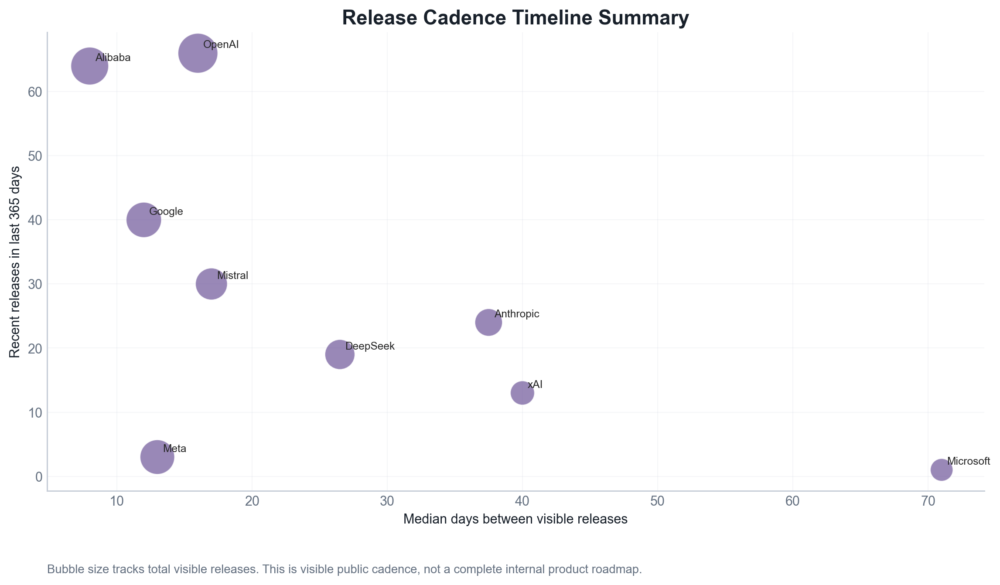
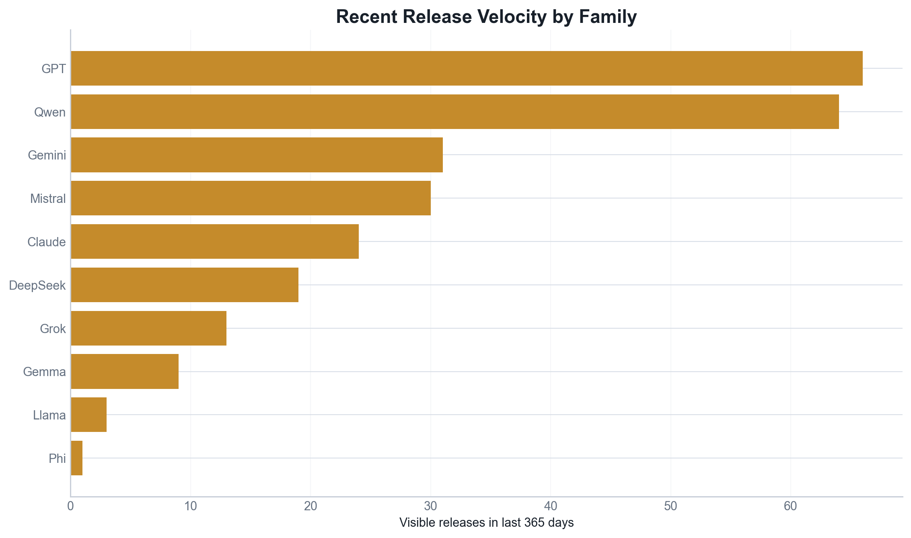
AI looks less like a single prior wave and more like an uncomfortable hybrid: spreadsheet-style task rebundling, internet-style diffusion, cloud-style API economics, and electricity-style long-run production redesign.
| wave | period | ai_similarity_score | interpretation |
|---|---|---|---|
| cloud_saas | 2006-2022 | 99.17 | Best analogy for enterprise adoption lags and API-first business-model shift. |
| internet | 1993-2010 | 98.86 | Best analogy for general-purpose diffusion, platform creation and strange second-order labor demand. |
| smartphones | 2007-2020 | 97.44 | Best analogy for consumer pull, app ecosystems and fast behavioral rewiring. |
| containerization | 1956-1990 | 97.23 | Best analogy for cost shock in a hidden infrastructure layer. |
| search_ads | 1998-2015 | 96.53 | Best analogy for advertising-funded discovery and winner-take-most information layers. |
| electricity | 1882-1930 | 96.22 | Best analogy for long-run production reorganization, not near-term speed. |
| spreadsheets | 1979-1995 | 95.85 | Best analogy for occupational task rebundling and sudden knowledge-worker productivity jumps. |
| industrial_robotics | 1961-2020 | 89.11 | Useful negative analogy: physical deployment is slower and more capital-locked than software AI. |
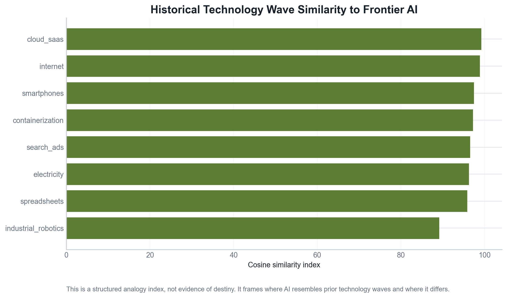
| claim_id | claim | evidence | confidence | analysis_captured_at |
|---|---|---|---|---|
| company-next-best-model | GPT has the strongest composite signal for near-term frontier leadership, but the top open-weight ecosystem score is not necessarily the same family. | Composite of LMArena, SWE-bench, OpenRouter, Epoch, Hugging Face, GitHub and OpenAlex indicators. | medium | 2026-05-16T17:13:09+00:00 |
| jobs-augmentation-not-total-replacement | The labor signal is broad task contact, not full-job deletion: high-exposure occupations still retain bottlenecks from trust, regulation, physical work and accountability. | Anthropic Economic Index occupation exposure joined to O*NET task text, task collaboration modes and wage/job metadata. | medium-high | 2026-05-16T17:13:09+00:00 |
| open-source-catchup | Open-weight systems look structurally advantaged on ecosystem and cost but still need repeated frontier jumps to erase closed/API benchmark gaps. | OpenRouter price fields, Hugging Face downloads/files, LMArena access-class split and Epoch open-weight release metadata. | medium | 2026-05-16T17:13:09+00:00 |
| ten-year-forecast | The 10-year question is less whether AI touches most cognitive workflows and more whether institutions redesign jobs around verification, liability and human preference. | Scenario table combines capability trend, price decline, observed task exposure and bottleneck scoring. | speculative | 2026-05-16T17:13:09+00:00 |
| finding | evidence | why_it_is_interesting | artifact | analysis_captured_at |
|---|---|---|---|---|
| Raw frontier leadership and open-distribution upside are different questions. | In the 10-year frontier-quality scenario, GPT leads (58.7% of simulation draws); in the open-ecosystem-upside scenario, Qwen leads (70.3% of simulation draws). | The previous single 10-year number was misleading because it mixed best-model simulation share with adoption economics. | company_next_frontier_probabilities.csv | 2026-05-16T17:13:09+00:00 |
| The open-vs-closed gap is not one gap. | The largest measured LMArena category gap is text_to_image at 361.6 rating points. | Open-source catchup can be true in one domain and false in another; a single headline benchmark hides where closed labs still have moat. | open_closed_gap_by_category.csv | 2026-05-16T17:13:09+00:00 |
| Cheap models can sit on the efficient frontier without being the raw best model. | Efficient frontier examples include OpenAI: gpt-oss-20b; inclusionAI: Ling-2.6-flash. | Enterprise adoption often follows sufficient capability per dollar, not absolute leaderboard rank. | price_performance_frontier.csv | 2026-05-16T17:13:09+00:00 |
| The top whole-job automation candidates are narrower than the top task-exposure jobs. | The highest replacement-feasibility occupation is Market Research Analysts and Marketing Specialists with feasibility index 39.0. | A job can be heavily touched by AI but still mostly redesigned around human review rather than deleted. | job_replacement_feasibility.csv | 2026-05-16T17:13:09+00:00 |
| Augmentation can be a larger labor-weighted mode than replacement. | Available labor-weight proxy: augmentation-first=75,414,668, replacement-candidate=796,776. | This pushes the labor forecast toward workflow redesign, wage compression and productivity dispersion before mass full automation. | labor_market_exposure_summary.csv | 2026-05-16T17:13:09+00:00 |
The skeptical section names assumptions that could break the analysis. It is meant to make the work easier to challenge, not to protect it with broad caveats.
| claim_id | assumption | failure_mode | mitigation | severity |
|---|---|---|---|---|
| family-frontier-ranking | Benchmark, release, ecosystem, cost and openness signals are directionally informative. | A private model or undisclosed benchmark result changes the frontier without appearing in public data. | Keep heuristic label, show sensitivity, and refresh source snapshots before external use. | high |
| direct-model-evidence | Normalized names and curated aliases correctly identify equivalent model rows. | Vendor naming drift or hidden routing makes same-looking model IDs non-equivalent. | Expose match confidence and keep unmatched/family-only rows in the audit table. | high |
| vendor-portfolio-ranking | Flagship plus evidence-weighted portfolio mean is a reasonable vendor aggregation. | A vendor has one dominant model family and several weak rows that should not affect portfolio interpretation. | Report flagship family, family count and components beside the vendor score. | medium |
| labor-domain-pressure | Keyword domain mapping is sufficient for a portfolio-level translation layer. | Occupation titles hide domain-specific workflows or regulated subdomains. | Keep occupation examples and human gates visible for each domain. | medium |
| forecast-envelope | Conservative/base/aggressive scenarios bound the intended stress test. | A structural market break makes historical slopes irrelevant. | Label forecast bands as non-calibrated scenario envelopes. | high |
Under-observed family audit:
| model_family | vendor | direct_benchmark_match_count | coverage_score | underobserved | underobserved_reasons |
|---|---|---|---|---|---|
| Command | Command | 0 | 0 | True | few_direct_model_matches,low_source_coverage,below_median_evidence_depth |
| GPT | OpenAI | 120 | 99.5 | True | below_median_evidence_depth |
| Claude | Anthropic | 48 | 100 | True | below_median_evidence_depth |
| Gemini | 24 | 100 | True | below_median_evidence_depth | |
| Grok | xAI | 3 | 100 | True | below_median_evidence_depth |
| Gemma | 15 | 96.3 | False | none | |
| Llama | Meta | 81 | 98.08 | False | none |
| DeepSeek | DeepSeek | 25 | 98.89 | False | none |
| Qwen | Alibaba | 83 | 99.3 | False | none |
| Mistral | Mistral | 56 | 99.33 | False | none |
| Phi | Microsoft | 6 | 100 | False | none |
data/dataset/: LMArena full leaderboard rows, SWE-bench submissions, Open LLM Leaderboard metrics, OpenRouter prices/context, Epoch model metadata, Hugging Face rollups, GitHub model mentions and OpenAlex paper mentions.data/analysis/company_frontier_scores.csvdata/analysis/dashboard_key_findings.csvdata/analysis/company_score_methodology.csvdata/analysis/company_score_sensitivity.csvdata/analysis/model_benchmark_match_audit.csvdata/analysis/direct_model_price_performance.csvdata/analysis/vendor_frontier_scores.csvdata/analysis/vendor_score_components.csvdata/analysis/source_coverage_diagnostics.csvdata/analysis/family_coverage_matrix.csvdata/analysis/frontier_score_bootstrap.csvdata/analysis/rank_stability_intervals.csvdata/analysis/claim_failure_modes.csvdata/analysis/underobserved_family_audit.csvdata/analysis/business_domain_ai_pressure.csvdata/analysis/domain_workflow_examples.csvdata/analysis/release_cadence_by_family.csvdata/analysis/release_cadence_by_vendor.csvdata/analysis/job_exposure_scores.csvdata/analysis/capability_forecasts.csvdata/analysis/forecast_input_diagnostics.csvdata/analysis/company_next_frontier_probabilities.csvdata/analysis/open_closed_gap_by_category.csvdata/analysis/lmarena_category_leaders.csvdata/analysis/price_performance_frontier.csvdata/analysis/labor_cluster_profiles.csvdata/analysis/labor_market_exposure_summary.csvdata/analysis/job_replacement_feasibility.csvdata/analysis/counterintuitive_findings.csvdata/analysis/historical_analogy_index.csvdata/analysis/forecast_claims.csvfigures/deep_analysis/company_score_component_stack.pngfigures/deep_analysis/company_score_evidence_scatter.pngfigures/deep_analysis/leadership_scenario_matrix.pngfigures/deep_analysis/open_closed_category_levels.pngfigures/deep_analysis/price_context_rating_map.pngfigures/deep_analysis/labor_outcome_mix.pngfigures/deep_analysis/forecast_scenario_dashboard.pngfigures/deep_analysis/direct_vs_proxy_price_performance.pngfigures/deep_analysis/vendor_frontier_scores.pngfigures/deep_analysis/family_vs_vendor_rank_shift.pngfigures/deep_analysis/source_coverage_dashboard.pngfigures/deep_analysis/family_signal_coverage_heatmap.pngfigures/deep_analysis/frontier_rank_uncertainty.pngfigures/deep_analysis/forecast_uncertainty_bands.pngfigures/deep_analysis/business_domain_pressure_matrix.pngfigures/deep_analysis/release_cadence_timeline.pngfigures/deep_analysis/recent_release_velocity.pngfigures/deep_analysis/*.png{kind=link}
{kind=link}
{kind=link}
{kind=link}
{kind=link}
{kind=link}
{kind=link}
{kind=link}
{kind=link}
{kind=link}
{kind=link}
{kind=link}
{kind=link}
{kind=link}
{kind=link}
{kind=link}
{kind=link}
{kind=link}
{kind=link}
{kind=link}
{kind=link}
{kind=link}
{kind=link}
{kind=link}
{kind=link}
{kind=link}
{kind=link}
{kind=link}
{kind=link}